setwd("E:/Desktop/UFSC/cursos/pliman_tut/imgs")Analyze objects
1 Directory
2 Working with polygons
A ‘polygon’ is a plane figure that is described by a finite number of straight line segments connected to form a closed polygonal chain (Singer, 1993)1.
We can then conclude that image objects can be expressed as polygons with n vertices. pliman has a set of functions(draw_*()) useful for drawing common shapes like circles, squares, triangles, rectangles and n- tagons . Another group of poly_*() functions can be used to analyze polygons. Let’s start with a simple example related to the area and perimeter of a square.
|==========================================================|| Tools for Plant Image Analysis (pliman 1.2.0) || Author: Tiago Olivoto || Type 'citation('pliman')' to know how to cite pliman || Type 'vignette('pliman_start')' for a short tutorial || Visit 'http://bit.ly/pkg_pliman' for a complete tutorial ||==========================================================|square <- draw_square(side = 2)
poly_area(square)[1] 4poly_perimeter(square)[1] 8Now, let’s see what happens when we start with a hexagon and increase the number of sides up to 1000.
shapes <-
list(side6 = draw_n_tagon(6, plot = FALSE),
side12 = draw_n_tagon(8, plot = FALSE),
side24 = draw_n_tagon(12, plot = FALSE),
side100 = draw_n_tagon(50, plot = FALSE),
side500 = draw_n_tagon(100, plot = FALSE),
side100 = draw_n_tagon(1000, plot = FALSE))
plot_polygon(shapes, merge = FALSE, aspect_ratio = 1)
poly_area(shapes) side6 side12 side24 side100 side500 side100
2.598076 2.828427 3.000000 3.133331 3.139526 3.141572 poly_perimeter(shapes) side6 side12 side24 side100 side500 side100
6.000000 6.122935 6.211657 6.279052 6.282152 6.283175 Note that when \(n \to \infty\), the sum of the sides becomes the circumference of the circle, given by \(2 \pi r\), and the area becomes \(\pi r^2\). This is fun, but pliman is primarily designed for analyzing plant image analysis. So why use polygons? Let’s see how we can use these functions to get applicable information.
leaves <- image_import("ref_leaves.jpg", plot = TRUE)
# getting the outline of objects
cont <-
object_contour(leaves,
index = "B-R",
watershed = FALSE)
# plotting the polygon
plot_polygon(cont)
Nice! We can use the contours of any object to get useful information related to its shape. To reduce the amount of output, I will only use five samples: 1, 2, 12, and 23.
cont <- cont[c("1", "2", "12", "23")]
plot_polygon(cont)
In the current version of pliman, you can calculate the following measurements. For more details, see Chen & Wang (2005)2, Claude (2008)3, and Montero et al. (2009)4.
2.1 Area
The area of a shape is calculated using Shoelace’s formula (Lee and Lim, 2017)5, as follows
\[ A=\frac{1}{2}\left |\sum_{i=1}^{n}\left(x_{i} y_{i+1}-x_{i+1}y_{i}\right)\right| \]
poly_area(cont) 1 2 12 23
18379.0 36412.5 8294.0 1750.0 2.2 Perimeter
The perimeter is calculated as the sum of the Euclidean distance between all points on a shape. Distances can be obtained with poly_distpts().
poly_perimeter(cont) 1 2 12 23
615.0143 1122.8448 469.5584 555.0833 # perimeter of a circle with radius 2
circle <- draw_circle(radius = 2, plot = FALSE)
poly_perimeter(circle)[1] 12.56635# check the result
2*pi*2[1] 12.566372.3 Radius
The radius of a pixel on the object’s contour is calculated as its distance from the object’s centroid(also called ‘center of mass’). These distances can be obtained with poly_centdist().
dist <- poly_centdist(cont)
# stats for radius
mean_list(dist) 1 2 12 23
81.52730 107.18736 61.76413 68.00845 min_list(dist) 1 2 12 23
56.16876 62.37804 29.40537 3.44969 max_list(dist) 1 2 12 23
126.9367 152.4562 106.8634 135.5301 sd_list(dist) 1 2 12 23
17.40508 18.44772 23.15230 38.91780 # average radius of above circle
poly_centdist(circle) |> mean_list()[1] 1.9999982.4 Length and width
The length and width of an object are calculated with poly_lw(), as the difference between the maximum and minimum of the x and y coordinates after the object has been aligned with poly_align().
poly_lw(cont) length width
1 238.5645 125.11629
2 280.5703 237.69880
12 208.3183 68.91907
23 269.2557 10.633562.5 Circularity, eccentricity, diameter, and elongation
Circularity(Montero et al. 2009)6 is also called shape compactness, or measure of roundness of an object. It is given by \(C = P^2 / A\), where \(P\) is the perimeter and \(A\) is the area of the object.
poly_circularity(cont) 1 2 12 23
20.58015 34.62494 26.58369 176.06710 As the above measurement depends on the scale, normalized roundness can be used. In this case, a perfect circle is assumed to have a circularity equal to 1. This measure is invariant under translation, rotation and scale transformations, given \(Cn = P^2 / 4 \pi A\)
poly_circularity_norm(cont) 1 2 12 23
1.637716 2.755365 2.115463 14.010975 # normalized circularity for different shapes
draw_square(plot =FALSE) |> poly_circularity_norm()[1] 1.27324draw_circle(plot=FALSE) |> poly_circularity_norm()[1] 1.000003poly_circularity_haralick() calculates the Circularity of Haralick, CH (Haralick, 1974)7. The method is based on calculating all Euclidean distances from the object’s centroid to each contour pixel. With this set of distances, the mean(\(m\)) and the standard deviation(\(s\)) are calculated. These statistical parameters are used in a ratio that calculates CH as $CH = m/ sd $.
1 2 12 23
4.684109 5.810331 2.667732 1.747489 poly_convexity() Calculates the convexity of a shape using a ratio of the perimeter of the convex hull to the perimeter of the polygon.
poly_convexity(cont) 1 2 12 23
0.8795792 0.6891546 0.9133513 0.7703550 poly_eccentricity() Calculates the eccentricity of a shape using the ratio of the eigenvalues(coordinate inertia axes).
poly_eccentricity(cont) 1 2 12 23
0.34777030 0.84355337 0.12747908 0.00205374 poly_elongation() Calculates the elongation of an object as 1 - width / length
poly_elongation(cont) 1 2 12 23
0.4755452 0.1528012 0.6691646 0.9605076 poly_caliper() Calculates the gauge(also called Feret’s diameter).
poly_caliper(cont) 1 2 12 23
238.6064 284.5083 208.4322 269.2675 Users can use the poly_measures() function to calculate most object measurements in a single call.
measures <- poly_measures(cont) |> round_cols()
t(measures) 1 2 12 23
id 1.00 2.00 3.00 4.00
x 472.94 808.90 443.60 412.66
y 144.26 168.36 512.17 657.39
area 18379.00 36412.50 8294.00 1750.00
area_ch 19558.00 45900.50 8815.50 2110.50
perimeter 615.01 1122.84 469.56 555.08
radius_mean 81.53 107.19 61.76 68.01
radius_min 56.17 62.38 29.41 3.45
radius_max 126.94 152.46 106.86 135.53
radius_sd 17.41 18.45 23.15 38.92
radius_ratio 2.26 2.44 3.63 39.29
diam_mean 163.05 214.37 123.53 136.02
diam_min 112.34 124.76 58.81 6.90
diam_max 253.87 304.91 213.73 271.06
caliper 238.61 284.51 208.43 269.27
length 238.56 280.57 208.32 269.26
width 125.12 237.70 68.92 10.63
solidity 0.94 0.79 0.94 0.83
convexity 0.88 0.69 0.91 0.77
elongation 0.48 0.15 0.67 0.96
circularity 20.58 34.62 26.58 176.07
circularity_haralick 3.23 3.38 1.27 0.09
circularity_norm 1.64 2.76 2.12 14.01
eccentricity 0.35 0.84 0.13 0.00If the image resolution is known, the measurements can be corrected with get_measures(). Image resolution can be obtained using a known distance in the image. In the example, the white square has a side of 5 cm. So using dpi() the resolution can be obtained. In this case, the dpi is ~50.
color_measures <- get_measures(measures, dpi = 50)
t(color_measures) 1 2 12 23
id 1.000 2.000 3.000 4.000
x 472.940 808.900 443.600 412.660
y 144.260 168.360 512.170 657.390
area 47.430 93.968 21.404 4.516
area_ch 50.472 118.453 22.750 5.446
perimeter 31.243 57.040 23.854 28.198
radius_mean 4.142 5.445 3.137 3.455
radius_min 2.853 3.169 1.494 0.175
radius_max 6.449 7.745 5.428 6.885
radius_sd 0.884 0.937 1.176 1.977
radius_ratio 0.115 0.124 0.184 1.996
diam_mean 8.283 10.890 6.275 6.910
diam_min 5.707 6.338 2.988 0.351
diam_max 12.897 15.489 10.857 13.770
caliper 12.121 14.453 10.588 13.679
length 12.119 14.253 10.583 13.678
width 6.356 12.075 3.501 0.540
solidity 0.940 0.790 0.940 0.830
convexity 0.880 0.690 0.910 0.770
elongation 0.480 0.150 0.670 0.960
circularity 20.580 34.620 26.580 176.070
circularity_haralick 3.230 3.380 1.270 0.090
circularity_norm 1.640 2.760 2.120 14.010
eccentricity 0.350 0.840 0.130 0.000Some useful functions can be used to manipulate coordinates. In the following example I will show some features implemented in pliman. Just for simplicity, I’ll use only one object.
o2 <- cont[["12"]]
plot_polygon(o2)
2.6 Rotate polygons
poly_rotate() can be used to rotate the polygon coordinates by an angle (0-360 degrees) in the trigonometric (anti-clockwise) direction.
rot <- poly_rotate(o2, angle = 45)
2.7 Invert polygons
poly_flip_x() and poly_flip_y() can be used to flip shapes along the x and y axis, respectively.
flipped <-
list(fx = poly_flip_x(o2),
fy = poly_flip_y(o2))
plot_polygon(flipped, merge = FALSE)
2.8 Perimeter sampling
poly_sample() samples n coordinates between existing points, and poly_sample_prop() samples a proportion of coordinates between existing ones.
# sample 50 coordinates
poly_sample(o2, n=10) |> plot_polygon()
# sample 10% of coordinates
poly_sample_prop(o2, prop = 0.1) |> plot_polygon()
2.9 smoothing
poly_smooth() smooths the contour of a polygon by combining prop coordinate point samples and interpolating them using vertices vertices(default is 1000) .
smoothed <-
list( original = o2,
s1 = poly_smooth(o2, prop = 0.2, plot = FALSE),
s2 = poly_smooth(o2, prop = 0.1, plot = FALSE),
s1 = poly_smooth(o2, prop = 0.04, plot = FALSE)
)
plot_polygon(smoothed, merge = FALSE, ncol = 2, aspect_ratio = 1)
2.10 Noises
poly_jitter() adds a small amount of noise to a set of coordinates. See base::jitter() for more details.
set.seed(1)
c1 <- draw_circle(n = 200, plot = FALSE)
c2 <- draw_circle(n = 200, plot = FALSE) |>
poly_jitter(noise_x = 100,
noise_y = 100,
plot = FALSE)
plot_polygon(list(c1, c2), merge = FALSE)
3 Analyzing objects
The functions we’ve seen can be used to obtain measurements of objects. However, for image analysis it is necessary to combine different functions (mainly object_contour() and poly_measures()). Also, almost always, several images need to be analyzed and repeating this process each time would be tedious and inefficient. To address these needs, users can use the analyze_objects() function. Let’s start with a simple example, using the object_300dpi.png image available on GitHub page. To facilitate importing images from this folder, an image_pliman() helper function is used.
library(pliman)
library(tidyverse)
library(metan)
img <- image_pliman("objects_300dpi.jpg", plot = TRUE)
The image above was produced with Microsoft PowerPoint. It has a known resolution of 300 dpi(dots per inch) and displays four objects
- Larger square: 10 x 10 cm (100 cm\(^2\))
- Smaller square: 5 x 5 cm(25 cm\(^2\))
- Rectangle: 4 x 2 cm(8 cm\(^2\))
- Circle: 3 cm in diameter(~7.07 cm\(^2\))
To count the objects in the image we use analyze_objects() and inform the image(the only required argument). By default, the NB index is used for object segmentation.
img_res <- analyze_objects(img, marker = "id")
3.1 Adjusting object measurements
The results were stored in img_res. Since there is no scale declared in the example above, we have no idea about the actual area of objects in cm\(^2\), only in pixels. In this case, we use get_measures() to adjust pixel measurements to metric units.
There are two main ways to adjust object measurements (from pixels to cm, for example). The first is to declare the known area, perimeter or radius of a given object. The measure for the other objects will then be calculated by a simple rule of three. The second is by declaring a known image resolution in dpi(dots per inch). In this case, perimeter, area, and radius will be adjusted by the dpi informed.
3.1.1 Declaring a known value
Since we know the area of the larger square (object 1), let’s adjust the area of the other objects in the image using this.
get_measures(img_res ,
id = 1,
area ~ 100) |>
t()-----------------------------------------
measures corrected with:
object id: 1
area : 100
-----------------------------------------
Total : 40.009
Average : 13.336
----------------------------------------- 2 3 4
id 2.000 3.000 4.000
x 1737.518 1737.571 1737.966
y 452.998 1296.354 939.007
area 25.041 7.019 7.949
area_ch 24.958 7.022 7.907
perimeter 19.983 10.093 11.913
radius_mean 2.866 1.491 1.668
radius_min 2.492 1.479 0.988
radius_max 3.531 1.504 2.224
radius_sd 0.314 0.004 0.423
diam_mean 5.732 2.982 3.335
diam_min 4.983 2.957 1.976
diam_max 7.062 3.008 4.449
major_axis 5.783 2.990 4.609
minor_axis 5.773 2.989 2.299
length 6.520 2.996 3.994
width 6.509 2.999 1.987
radius_ratio 1.417 1.017 2.252
eccentricity 0.996 0.994 0.348
theta 1.563 -1.547 0.000
solidity 1.003 1.000 1.005
convexity 0.749 0.905 0.836
elongation 0.002 -0.001 0.502
circularity 15.946 14.512 17.854
circularity_haralick 9.127 423.369 3.947
circularity_norm 1.273 1.161 1.430
coverage 0.107 0.030 0.034
asm 0.913 0.829 0.853
con 0.051 0.078 0.069
cor 0.731 0.781 0.786
var 1.095 1.178 1.161
idm 0.987 0.975 0.979
sav 21.901 21.821 21.828
sva 475.312 468.297 470.245
sen 0.106 0.196 0.156
ent 0.116 0.220 0.176
dva 0.051 0.078 0.069
den 0.054 0.090 0.076
f12 0.518 0.523 0.555
f13 0.279 0.380 0.3563.1.2 Declaring the image resolution
If the image resolution is known, all measurements will be adjusted accordingly. Let’s see a numerical example with pixels_to_cm(). This function converts the number of pixels(* px *) into cm, considering the image resolution in dpi, as follows: \(cm = px \times(2.54 / dpi)\). As we know the number of pixels of the larger square, its perimeter in cm is given by
# number of pixels for the perimeter of the largest square
ls_px <- img_res$results$perimeter[1]
pixels_to_cm(px = ls_px , dpi = 300)[1] 39.9265The perimeter of object 1 adjusted by image resolution is very close to the known value (40 cm). Below, the values of all measures are adjusted by declaring the dpi argument in get_measures().
img_res_cor <- get_measures(img_res, dpi = 300)
t(img_res_cor) 1 2 3 4
id 1.000 2.000 3.000 4.000
x 668.995 1737.518 1737.571 1737.966
y 797.992 452.998 1296.354 939.007
area 99.812 24.994 7.006 7.934
area_ch 99.686 24.911 7.008 7.892
perimeter 39.926 19.964 10.083 11.902
radius_mean 5.728 2.863 1.489 1.666
radius_min 4.984 2.489 1.477 0.987
radius_max 7.057 3.528 1.502 2.222
radius_sd 0.629 0.314 0.004 0.422
diam_mean 11.456 5.726 2.979 3.332
diam_min 9.967 4.978 2.955 1.974
diam_max 14.114 7.055 3.005 4.445
major_axis 11.546 5.778 2.987 4.604
minor_axis 11.526 5.768 2.986 2.297
length 11.121 6.514 2.994 3.990
width 11.107 6.503 2.996 1.985
radius_ratio 1.416 1.417 1.017 2.252
eccentricity 0.997 0.996 0.994 0.348
theta -0.007 1.563 -1.547 0.000
solidity 1.001 1.003 1.000 1.005
convexity 0.750 0.749 0.905 0.836
elongation 0.001 0.002 -0.001 0.502
circularity 15.971 15.946 14.512 17.854
circularity_haralick 9.111 9.127 423.369 3.947
circularity_norm 1.273 1.273 1.161 1.430
coverage 0.427 0.107 0.030 0.034
asm 0.949 0.913 0.829 0.853
con 0.016 0.051 0.078 0.069
cor 0.797 0.731 0.781 0.786
var 1.040 1.095 1.178 1.161
idm 0.995 0.987 0.975 0.979
sav 21.946 21.901 21.821 21.828
sva 478.992 475.312 468.297 470.245
sen 0.063 0.106 0.196 0.156
ent 0.069 0.116 0.220 0.176
dva 0.016 0.051 0.078 0.069
den 0.024 0.054 0.090 0.076
f12 0.674 0.518 0.523 0.555
f13 0.260 0.279 0.380 0.3563.1.3 Understanding measurements
object_contour(img) %>% # get the contour of objects
poly_mass() %>% # computes the center of mass and minimum and maximum radii
plot_mass() # plot the measurements
- Larger square:
- The minimum diameter(a = 9.97) can be considered as the side of the square
- The maximum diameter, given by \(a \sqrt {2}\) can be considered the diagonal of the square (\(9.97 \sqrt {2} = 14,099 \approx 14,105\)
t(img_res_cor) 1 2 3 4
id 1.000 2.000 3.000 4.000
x 668.995 1737.518 1737.571 1737.966
y 797.992 452.998 1296.354 939.007
area 99.812 24.994 7.006 7.934
area_ch 99.686 24.911 7.008 7.892
perimeter 39.926 19.964 10.083 11.902
radius_mean 5.728 2.863 1.489 1.666
radius_min 4.984 2.489 1.477 0.987
radius_max 7.057 3.528 1.502 2.222
radius_sd 0.629 0.314 0.004 0.422
diam_mean 11.456 5.726 2.979 3.332
diam_min 9.967 4.978 2.955 1.974
diam_max 14.114 7.055 3.005 4.445
major_axis 11.546 5.778 2.987 4.604
minor_axis 11.526 5.768 2.986 2.297
length 11.121 6.514 2.994 3.990
width 11.107 6.503 2.996 1.985
radius_ratio 1.416 1.417 1.017 2.252
eccentricity 0.997 0.996 0.994 0.348
theta -0.007 1.563 -1.547 0.000
solidity 1.001 1.003 1.000 1.005
convexity 0.750 0.749 0.905 0.836
elongation 0.001 0.002 -0.001 0.502
circularity 15.971 15.946 14.512 17.854
circularity_haralick 9.111 9.127 423.369 3.947
circularity_norm 1.273 1.273 1.161 1.430
coverage 0.427 0.107 0.030 0.034
asm 0.949 0.913 0.829 0.853
con 0.016 0.051 0.078 0.069
cor 0.797 0.731 0.781 0.786
var 1.040 1.095 1.178 1.161
idm 0.995 0.987 0.975 0.979
sav 21.946 21.901 21.821 21.828
sva 478.992 475.312 468.297 470.245
sen 0.063 0.106 0.196 0.156
ent 0.069 0.116 0.220 0.176
dva 0.016 0.051 0.078 0.069
den 0.024 0.054 0.090 0.076
f12 0.674 0.518 0.523 0.555
f13 0.260 0.279 0.380 0.3563.2 Texture features
The function computes 13 Haralick texture features for each object based on a gray-level co-occurrence matrix (Haralick et al. 1979)8. Haralick features depend on the configuration of the parameters har_nbins and har_scales. har_nbins controls the number of bins used to compute the Haralick matrix. A smaller har_nbins can give more accurate estimates of the correlation because the number of events per bin is higher. While a higher value will give more sensitivity. har_scales controls the number of scales used to compute the Haralick features. Since Haralick features compute the correlation of intensities of neighboring pixels, it is possible to identify textures with different scales, e.g., a texture that is repeated every two pixels or 10 pixels. By default, the Haralick features are computed with the R band. To change this default, use the argument har_band. For example, har_band = 2 will compute the features with the green band.
The following measures are returned (for more details, see this post)
-
asm: The angular second-moment feature. -
con: The contrast feature -
cor: Correlation measures the linear dependency of gray levels of neighboring pixels. -
var: The variance of gray levels pixels. -
idm: The Inverse Difference Moment (IDM), i.e., the local homogeneity. -
sav: The Sum Average. -
sva: The Sum Variance. -
sen: Sum Entropy. -
dva: Difference Variance. -
den: Difference Entropy -
f12: Difference Variance. -
f13: The angular second-moment feature.
3.3 Single image processing
The analyze_objects() function calculates a range of measurements that can be used to study the shape and texture of objects, such as leaves. In the following example, I show how to plot the length and width of each leaf in the following image.
leaves <- image_import("folhas.jpg", plot = TRUE)
leaves_meas <-
analyze_objects(leaves,
watershed = FALSE)
leaves_cor <- get_measures(leaves_meas, dpi = 300)
t(leaves_cor) 1 2
id 1.000 2.000
x 528.542 234.020
y 299.984 825.798
area 5.862 3.879
area_ch 5.946 4.227
perimeter 12.157 9.942
radius_mean 1.591 1.145
radius_min 0.735 0.838
radius_max 2.683 1.677
radius_sd 0.582 0.219
diam_mean 3.181 2.290
diam_min 1.470 1.675
diam_max 5.366 3.353
major_axis 4.843 2.864
minor_axis 1.563 1.744
length 5.241 3.210
width 1.602 1.883
radius_ratio 3.650 2.002
eccentricity 0.136 0.425
theta -1.057 -0.087
solidity 0.986 0.918
convexity 0.913 0.791
elongation 0.694 0.413
circularity 25.209 25.478
circularity_haralick 2.735 5.219
circularity_norm 2.021 2.047
coverage 0.104 0.069
asm 0.044 0.172
con 1.120 0.495
cor 0.942 0.814
var 10.687 2.328
idm 0.778 0.814
sav 38.905 28.391
sva 1449.029 763.014
sen 1.337 0.856
ent 1.573 1.002
dva 1.120 0.495
den 0.407 0.328
f12 0.526 0.352
f13 0.822 0.590# plot width and length
plot_measures(leaves_cor , measure = "width")
plot_measures(leaves_cor , measure = "length", vjust = 50)
Here, we will count the grains in the grains.jpg image. This image has a cyan background and contains 90 soybeans that touch each other. The analyze_objects() function segments the image using the normalized blue index by default, as follows \(NB =(B /(R + G + B))\), where R, G and B are the red, green and blue bands. Note that if the image is contained in the default directory, it is not necessary to import it. Just enter the image name in quotes in the img argument(e.g., img = "grains").
In this example, objects are counted and segmented objects are colored with random colors using the show_segmentation = TRUE argument. Users can set show_contour = FALSE to remove the contour line and identify the objects (in this example, the grains) using the marker = "id" arguments. The background color can also be changed with col_background.
count <-
analyze_objects(img = "grains",
show_segmentation = TRUE,
show_contour = FALSE,
marker = "id")
count$statistics stat value
1 n 90.00000
2 min_area 446.00000
3 mean_area 675.45556
4 max_area 842.00000
5 sd_area 71.65494
6 sum_area 60791.00000# Get the measurements of the object
get_measures(count) |>
head() |>
t() 1 2 3 4 5 6
id 1.000 2.000 3.000 4.000 5.000 6.000
x 351.890 824.970 811.263 710.004 807.122 818.892
y 411.183 264.736 198.825 262.800 341.979 714.864
area 842.000 822.000 738.000 761.000 757.000 742.000
area_ch 810.000 801.000 712.000 733.000 724.000 714.000
perimeter 104.497 107.083 98.497 100.255 98.841 98.841
radius_mean 15.911 15.740 14.876 15.112 15.072 14.906
radius_min 14.847 13.563 14.129 12.886 13.745 13.775
radius_max 16.897 17.782 15.379 17.048 16.714 16.272
radius_sd 0.465 1.201 0.309 1.175 0.771 0.635
diam_mean 31.822 31.480 29.752 30.224 30.144 29.812
diam_min 29.695 27.126 28.258 25.773 27.489 27.550
diam_max 33.793 35.565 30.759 34.097 33.428 32.543
major_axis 33.506 35.775 30.739 34.365 33.056 32.191
minor_axis 32.027 29.288 30.581 28.228 29.186 29.373
length 33.480 35.413 30.445 33.818 33.005 31.766
width 32.195 29.731 30.323 27.708 29.399 29.094
radius_ratio 1.138 1.311 1.088 1.323 1.216 1.181
eccentricity 0.938 0.742 0.975 0.749 0.812 0.864
theta 1.224 -0.327 -1.283 -0.261 0.544 -1.197
solidity 1.040 1.026 1.037 1.038 1.046 1.039
convexity 0.936 0.923 0.904 0.882 0.867 0.886
elongation 0.038 0.160 0.004 0.181 0.109 0.084
circularity 12.969 13.950 13.146 13.208 12.906 13.166
circularity_haralick 34.181 13.107 48.152 12.857 19.539 23.486
circularity_norm 1.092 1.179 1.112 1.117 1.091 1.115
coverage 0.001 0.001 0.001 0.001 0.001 0.001
asm 0.066 0.080 0.059 0.053 0.065 0.058
con 0.850 0.975 0.888 0.917 0.855 0.847
cor 0.912 0.883 0.920 0.911 0.909 0.924
var 5.837 5.179 6.566 6.166 5.681 6.564
idm 0.733 0.746 0.706 0.724 0.727 0.720
sav 32.747 33.476 34.419 33.375 32.003 30.684
sva 1014.530 1061.010 1121.793 1052.364 967.498 889.380
sen 1.187 1.145 1.247 1.241 1.187 1.223
ent 1.418 1.356 1.482 1.478 1.407 1.446
dva 0.850 0.975 0.888 0.917 0.855 0.847
den 0.421 0.429 0.428 0.429 0.416 0.419
f12 0.445 0.445 0.461 0.456 0.447 0.465
f13 0.745 0.735 0.767 0.763 0.745 0.764In the following example, we will select objects with an area above the average of all objects using lower_size = 675.
#
analyze_objects("grains",
marker = "id",
topn_upper = 5)
Users can also use the topn _* arguments to select the n objects based on the smallest or largest areas. Let’s see how to select the 5 grains with the smallest area, showing the original grains on a blue background. We will also use the my_index argument to choose a custom index to segment the image. Just for comparison, we will explicitly set the normalized blue index by calling my_index = "B /(R + G + B)".
analyze_objects("grains",
marker = "id",
topn_lower = 5,
col_background = "black",
index = "B /(R + G + B)") # normalized blue(NB)Index 'B /(R + G + B)' is not available. Trying to compute your own index.
3.4 Batch processing
In image analysis, it is often necessary to process more than one image. For example, in plant breeding, the number of grains per plant(eg wheat) is often used in the indirect selection of high-yielding plants. In pliman, batch processing can be done when the user declares the pattern argument.
To speed up processing time, especially for large numbers of images, the parallel = TRUE argument can be used. In this case, images are processed asynchronously (in parallel) in separate R sessions running in the background on the same machine. The number of sections is set to 50% of available cores. This number can be explicitly controlled with the workers argument.
system.time(
list_res <- analyze_objects(pattern = "img_sb", show_image = FALSE)
)Processing image img_sb_50_1 |=== | 8% 00:00:00
Processing image img_sb_50_10 |===== | 15% 00:00:01
Processing image img_sb_50_11 |======== | 23% 00:00:01
Processing image img_sb_50_12 |========== | 31% 00:00:02
Processing image img_sb_50_13 |============= | 38% 00:00:02
Processing image img_sb_50_2 |================ | 46% 00:00:03
Processing image img_sb_50_3 |=================== | 54% 00:00:04
Processing image img_sb_50_4 |====================== | 62% 00:00:05
Processing image img_sb_50_5 |======================== | 69% 00:00:06
Processing image img_sb_50_6 |=========================== | 77% 00:00:07
Processing image img_sb_50_7 |============================== | 85% 00:00:08
Processing image img_sb_50_8 |================================ | 92% 00:00:09
Processing image img_sb_50_9 |===================================| 100% 00:00:09
--------------------------------------------
Image Objects
img_sb_50_1 100
img_sb_50_10 29
img_sb_50_11 23
img_sb_50_12 15
img_sb_50_13 7
img_sb_50_2 90
img_sb_50_3 83
img_sb_50_4 75
img_sb_50_5 70
img_sb_50_6 60
img_sb_50_7 57
img_sb_50_8 48
img_sb_50_9 36
--------------------------------------------Done! usuário sistema decorrido
9.83 0.70 10.53 # parallel processing
# 6 multiple sections (50% of my pc's cores)
system.time(
list_res <-
analyze_objects(pattern = "img_sb",
show_image = FALSE,
parallel = TRUE)
)Image processing using multiple sessions (6). Please wait.--------------------------------------------
Image Objects
img_sb_50_1 100
img_sb_50_10 29
img_sb_50_11 23
img_sb_50_12 15
img_sb_50_13 7
img_sb_50_2 90
img_sb_50_3 83
img_sb_50_4 75
img_sb_50_5 70
img_sb_50_6 60
img_sb_50_7 57
img_sb_50_8 48
img_sb_50_9 36
--------------------------------------------Done! usuário sistema decorrido
0.06 0.00 14.76 4 Object coordinates
Users can get the coordinates for all desired objects with object_coord(). When the id argument is set to NULL (default), a bounding rectangle is drawn including all objects. Use id = "all" to get the coordinates of all objects in the image or use a numeric vector to indicate the objects to calculate the coordinates. Note that the watershed = FALSE argument is used to avoid unique objects being split up into multiple objects by the watershed segmentation algorithm.
leaves <- image_import("folhas.jpg", plot = TRUE)
# get the id of each object
object_id(leaves, watershed = FALSE)
# Get the coordinates of a bounding rectangle around all objects
object_coord(leaves, watershed = FALSE)
$col_min
[1] 49
$col_max
[1] 937
$row_min
[1] 40
$row_max
[1] 702# Get coordinates for all objects
object_coord(leaves ,
id = "all",
watershed = FALSE)
$col_min
[1] 49 710
$col_max
[1] 603 937
$row_min
[1] 379 40
$row_max
[1] 702 425# Get the coordinates of objects 1 and 2
# 20 border pixels
object_coord(leaves ,
id = 1,
edge = 20,
watershed = FALSE)
$col_min
[1] 31
$col_max
[1] 621
$row_min
[1] 361
$row_max
[1] 7205 Isolating objects
Knowing the coordinates of each object, it is possible to isolate it. The object_isolate() function is used for this. In the following example, I will isolate object 1 and set a 10-pixel border around the object.
id1 <-
object_isolate(leaves ,
watershed = FALSE,
id = 1,
edge = 10)
plot(id1)
6 Including objects in a list
object_split() can be used to split up a series of objects contained in a single image into a list, where each element is one object. By default, the background is removed and shown in white.
list <- object_split(leaves, watershed = FALSE)==============================
Summary of the procedure
==============================
Number of objects: 2
Average area : 67935
Minimum area : 54096
Maximum area : 81774
Objects created : 2
==============================
str(list)List of 2
$ 1:Formal class 'Image' [package "EBImage"] with 2 slots
.. ..@ .Data : num [1:330, 1:558, 1:3] 1 1 1 1 1 1 1 1 1 1 ...
.. ..@ colormode: int 2
.. ..$ dim: int [1:3] 330 558 3
$ 2:Formal class 'Image' [package "EBImage"] with 2 slots
.. ..@ .Data : num [1:389, 1:232, 1:3] 1 1 1 1 1 1 1 1 1 1 ...
.. ..@ colormode: int 2
.. ..$ dim: int [1:3] 389 232 37 RGB values for each object
To get the RGB intensity of each object in the image, we use the object_rgb = TRUE argument in the analyze_objects() function. In the following example, we will use the R, G and B bands and their normalized values. The pliman_indexes() function returns the indexes available in the package. To compute a specific index, simply enter a formula containing the values of R, G, or B (e.g. object_index = "B/G+R").
img <- image_import("flax.jpg", plot = TRUE)
(indx <- pliman_indexes()) [1] "R" "G" "B" "NR" "NG" "NB" "GB" "RB" "GR"
[10] "BI" "BIM" "SCI" "GLI" "HI" "NGRDI" "NDGBI" "NDRBI" "I"
[19] "S" "VARI" "HUE" "HUE2" "BGI" "L" "GRAY" "GLAI" "SAT"
[28] "CI" "SHP" "RI" "G-B" "G-R" "R-G" "R-B" "B-R" "B-G"
[37] "DGCI" flax_leaves <-
analyze_objects(img ,
index = "B",
watershed = FALSE,
filter = 2,
object_index = pliman_indexes(),
marker = "id",
marker_col = "black",
col_background = "white",
parallel = TRUE,
show_contour = FALSE)
library(pliman)
# PCA with the indices
ind <- summary_index(flax_leaves, type ="var")Warning: Columns GB, RB, HI, SHP, RI with infinite/NA values removed.Warning in sqrt(eigenvalue): NaNs produzidos
The R index provided the greatest contribution to the variation of PC1. The biplot containing the indices (variables) and the grains (individuals) can be seen below.


Now, let’s plot the DGCI (Dark Green Color Index) on each object. The DGCI is based on the HSB (Hue, Saturation, and Brightness) space color and has been used as an indicator of the darkness of the green color 9
plot(img)
plot_measures(flax_leaves, measure = "DGCI")
It seems that leaves with an average DGCI value of less than 0.4 can be considered “Yellowish” leaves. Users can then work with this feature and adapt it to their case.
report <-
summary_index(flax_leaves ,
index = "DGCI",
cut_point = 0.4,
plot = FALSE)Warning: Columns GB, RB, HI, SHP, RI with infinite/NA values removed.Warning in sqrt(eigenvalue): NaNs produzidosids <- report$ids
report$between_id n nsel prop mean_index_sel mean_index_nsel
1 156 19 0.1217949 0.3111329 0.594094report$within_id[report$within_id$id %in% ids,] id x y n_less n_greater less_ratio greater_ratio
46 46 1211.7940 263.1747 1250 221 0.850 0.150
82 82 213.8652 404.4598 720 200 0.783 0.217
84 84 1016.6994 440.0766 1016 2 0.998 0.002
87 88 808.6027 459.9216 862 312 0.734 0.266
92 93 753.3018 503.7922 1202 50 0.960 0.040
98 99 926.3478 495.3064 791 163 0.829 0.171
103 104 1182.2266 536.9925 1088 105 0.912 0.088
106 107 1327.1343 553.1377 501 157 0.761 0.239
108 109 1215.9287 601.9581 1252 270 0.823 0.177
109 110 1019.2076 594.2668 824 44 0.949 0.051
117 119 740.5159 645.0529 623 6 0.990 0.010
130 132 344.7508 793.9547 463 137 0.772 0.228
135 137 941.9922 788.2445 664 61 0.916 0.084
138 140 381.4860 822.8149 1194 227 0.840 0.160
145 147 244.2355 877.7158 1297 9 0.993 0.007
150 152 696.5520 906.0921 1000 4 0.996 0.004
157 159 703.7492 1031.8150 768 50 0.939 0.061
159 85 966.9768 1051.2005 895 NA NA NA
160 117 484.7518 1055.4428 756 NA NA NAIn the following graph, I plot the distribution of the RGB values “Yellowish” and “Greenish” leaves R, G, and B values.
# distribution of RGB values
library(tidyverse)
rgbs <-
flax_leaves$object_rgb |>
select(id, h, s, b) |>
mutate(type = ifelse(id %in% ids, "Yellowish", "Greenish")) |>
select(-id) |>
pivot_longer(-type)
ggplot(rgbs, aes(x = value)) +
geom_density(aes(fill = name), alpha = 0.5) +
facet_grid(type ~ name)Warning: Removed 74 rows containing non-finite values (stat_density).
Now, using the ids of each grain, I plot the values only in the “yello” leaves.
# plot
plot(img)
plot_measures(flax_leaves ,
id = ids,
measure = "DGCI",
col = "red")
plot_measures(flax_leaves ,
id = flax_leaves$results$id[!flax_leaves$results$id %in% ids],
measure = "DGCI",
col = "white")
Tip
When there are many objects, the parallel = TRUE argument will speed up extracting the RGB values. In the following example, an image with 1343 grains of Vicia cracca is analyzed. The indices "R" and "R/G" are computed. Grains with an average red value greater than 0.25 are highlighted.
library(pliman)
img2 <- image_import("vicia.jpg")
vicia <-
analyze_objects(img2,
index = "B",
object_index = "R",
show_image = FALSE,
parallel = TRUE)
summary_index <-
summary_index(vicia ,
index = "R",
cut_point = 0.25,
select_higher = TRUE)
count2 <-
object_contour(img2,
index = "B",
show_image = FALSE)
ids2 <- summary_index$ids
plot_contour(count2, col = "red")8 Leaf area
8.1 Known resolution
leaves <- image_import(image = "ref_leaves.jpg", plot = TRUE)
af <-
analyze_objects(leaves,
index = "B-G",
watershed = FALSE,
col_background = "black",
marker = "id")
# using images with known resolution
af_cor <- get_measures(af, dpi = 45.8)
plot_measures(af_cor ,
measure = "area",
vjust = -20,
col = " cyan ")
# declaring the measure of a known object
af_cor2 <-
get_measures(af,
id = 18,
measure = area ~ 25)-----------------------------------------
measures corrected with:
object id: 18
area : 25
-----------------------------------------
Total : 796.214
Average : 36.192
-----------------------------------------plot_measures(af_cor2 ,
measure = "area",
vjust = -35,
col = "salmon")
8.2 Reference object (dev version)
8.2.1 Single images
The reference argument can now be used to correct the object measures even when images with different shooting distances are used. This differs from the previous example (declaring the object with the known area) in a subtle, but crucial aspect: when reference is informed, batch processing can be used! In this example, the leaf area of the ref_leaves image is quantified and corrected considering a 5 x 5 (25 cm\(^2\)) red square as the reference object. When reference = TRUE is informed in analyze_objects() the function will perform a two-step process of object segmentation; so, the time processing is a bit slower.
The first step consists in segmenting the foreground (leaves and reference object) from the background. To do that, an image index is used and can be declared in the back_fore_index. The default (back_fore_index = "R/(G/B)") is optimized to segment white backgrounds from green leaves and a blue reference object. Let’s see how this index performs in this example.
library(pliman)
img <- image_import("ref_leaves.jpg", plot = TRUE)
ind <- image_index(img, index = "R/(G/B)", show_image = FALSE)[[1]]Index 'R/(G/B)' is not available. Trying to compute your own index.bin <- image_binary(img, index = "R/(G/B)", show_image = FALSE)[[1]]Index 'R/(G/B)' is not available. Trying to compute your own index.image_combine(ind, bin)
This index definitively is not the better option in this case. Will some other available index be better?
image_index(img, index = "all")
The B-G index seems to be a good candidate.
ind <- image_index(img, index = "B-G", show_image = FALSE)[[1]]
seg1 <- image_segment(img, index = "B-G", show_image = FALSE)
image_combine(ind, seg1)
Good job! now, we have the background removed. The next step is to segment the objects and the reference template. We basically need to repeat the previous step isolating the reference.
# see the better index
image_index(seg1, index = "all")
The R-G is a good candidate. So, I’ll perform the second segmentation using this index.
Now that we know the indexes to be used for each segmentation, we can use the function analyze_objects to get the corrected measures based on the reference object.
res1 <-
analyze_objects(img,
reference = TRUE,
reference_area = 25,
back_fore_index = "B-G",
fore_ref_index = "R-G",
watershed = FALSE,
marker = "area")
# plot the measures corrected by the image resolution
plot_measures(af_cor ,
measure = "area",
vjust = -20,
col = " cyan ")
8.2.2 Multiple images
If users need to analyze multiple images from the same sample, the images must share the same filename prefix, which is defined as the part of the filename that precedes the first hyphen (-) or underscore (_). Then, when using get_measures(), measurements from leaf images called, for example, F1-1.jpeg, F1_2.jpeg and F1-3.jpeg will be combined into a single image (F1), displayed in the merge object. This is useful, for example, for analyzing large sheets that need to be split into multiple images or multiple sheets belonging to the same sample that cannot be scanned into a single image.
In the following example, 36 images will be analyzed. These images contain flax leaves from 12 evaluation dates, with three replications10. Note that to ensure that all images are processed, all images must share a common pattern, in this case ("A"). Here, I will use the pattern = "A" to indicate that all images with this pattern name should be merged.
res <-
analyze_objects(pattern = "A",
dir_original = "linhaca",
reference = TRUE,
reference_area = 20,
watershed = FALSE,
filter = 2,
parallel = TRUE)Image processing using multiple sessions (6). Please wait.--------------------------------------------
Image Objects
A1_28_1 18
A1_28_2 29
A1_28_3 28
A10_90_1 149
A10_90_2 116
A10_90_3 77
A11_98_1 133
A11_98_2 154
A11_98_3 119
A12_105_1 111
A12_105_2 127
A12_105_3 155
A2_32_1 24
A2_32_2 25
A2_32_3 31
A3_42_1 39
A3_42_2 47
A3_42_3 54
A4_46_1 57
A4_46_2 38
A4_46_3 56
A5_55_1 53
A5_55_2 74
A5_55_3 63
A6_63_1 68
A6_63_2 105
A6_63_3 83
A7_70_1 98
A7_70_2 111
A7_70_3 112
A8_76_1 113
A8_76_2 116
A8_76_3 113
A9_83_1 119
A9_83_2 89
A9_83_3 100
--------------------------------------------Done!merged <- get_measures(res)Note that the merged is a list with three objects:
-
results: a data frame that contains the measurements of each individual object (in this case, an individual leaf) of each analyzed image.
1 2 3 4 5
img "A1_28_1" "A1_28_1" "A1_28_1" "A1_28_1" "A1_28_1"
id "1" "2" "3" "4" "5"
x "373.184" "422.529" "163.995" "127.295" "267.451"
y "316.718" "320.344" "350.678" "387.751" "400.642"
area "0.116" "0.159" "0.157" "0.195" "0.202"
area_ch "0.151" "0.190" "0.151" "0.193" "0.226"
perimeter "2.095" "2.115" "1.707" "2.298" "2.131"
radius_mean "0.249" "0.262" "0.230" "0.302" "0.263"
radius_min "0.010" "0.065" "0.117" "0.099" "0.116"
radius_max "0.478" "0.453" "0.368" "0.517" "0.430"
radius_sd "0.126" "0.111" "0.076" "0.130" "0.091"
diam_mean "0.499" "0.523" "0.461" "0.603" "0.526"
diam_min "0.019" "0.129" "0.233" "0.198" "0.231"
diam_max "0.956" "0.905" "0.736" "1.034" "0.859"
major_axis "0.981" "0.908" "0.727" "1.046" "0.838"
minor_axis "0.221" "0.264" "0.281" "0.243" "0.341"
length "0.909" "0.872" "0.723" "1.025" "0.802"
width "0.233" "0.310" "0.283" "0.238" "0.427"
radius_ratio "49.553" " 7.015" " 3.155" " 5.228" " 3.716"
eccentricity "0.070" "0.117" "0.220" "0.080" "0.250"
theta "-1.485" " 1.345" " 0.064" "-0.582" "-1.202"
solidity "0.768" "0.836" "1.042" "1.010" "0.893"
convexity "0.552" "0.554" "0.916" "0.915" "0.743"
elongation "0.744" "0.645" "0.609" "0.768" "0.468"
circularity "37.928" "28.087" "18.532" "27.089" "22.494"
circularity_haralick "1.985" "2.361" "3.026" "2.316" "2.901"
circularity_norm "3.495" "2.486" "1.608" "2.347" "1.939"
coverage "0.001" "0.002" "0.002" "0.002" "0.002"
asm "0.083" "0.132" "0.214" "0.161" "0.136"
con "2.799" "2.712" "1.913" "2.177" "2.307"
cor "0.658" "0.500" "0.494" "0.578" "0.679"
var "5.087" "3.714" "2.889" "3.581" "4.597"
idm "0.660" "0.736" "0.799" "0.743" "0.739"
sav " 9.204" " 8.431" "10.223" "10.163" "11.343"
sva " 79.651" " 64.489" " 94.518" " 93.948" "119.774"
sen "1.073" "0.924" "0.795" "0.900" "0.965"
ent "1.466" "1.196" "0.993" "1.135" "1.242"
dva "2.799" "2.712" "1.913" "2.177" "2.307"
den "0.586" "0.503" "0.429" "0.498" "0.499"
f12 "0.246" "0.242" "0.263" "0.235" "0.270"
f13 "0.580" "0.529" "0.509" "0.511" "0.567" -
summary: a data frame that contains the summary of the results, containing the number of objects in each image (n) the sum, mean and standard deviation of the area of each image, as well as the average value for all others measurements (perimeter, radius, etc.)
1 2 3 4
img "imgA1_28_1" "imgA1_28_2" "imgA1_28_3" "imgA10_90_1"
n " 18" " 29" " 28" "149"
area_sum " 2.571" " 6.294" " 7.048" "172.420"
area_mean "0.143" "0.217" "0.252" "1.157"
area_sd "0.058" "0.075" "0.095" "0.441"
area_ch "0.163" "0.219" "0.274" "1.217"
perimeter "2.005" "2.717" "2.715" "6.558"
radius_mean "0.248" "0.343" "0.338" "0.812"
radius_min "0.076" "0.079" "0.107" "0.187"
radius_max "0.434" "0.625" "0.602" "1.511"
radius_sd "0.106" "0.165" "0.148" "0.402"
diam_mean "0.497" "0.685" "0.677" "1.625"
diam_min "0.152" "0.158" "0.214" "0.374"
diam_max "0.869" "1.251" "1.204" "3.023"
major_axis "0.872" "1.278" "1.188" "3.070"
minor_axis "0.250" "0.225" "0.294" "0.511"
length "0.837" "1.232" "1.176" "2.978"
width "0.263" "0.228" "0.301" "0.517"
radius_ratio " 8.777" "10.306" " 5.729" " 9.602"
eccentricity "0.132" "0.052" "0.096" "0.044"
theta " 0.011" "-0.105" " 0.261" " 0.070"
solidity "0.954" "0.987" "0.988" "1.018"
convexity "0.769" "0.773" "0.850" "0.858"
elongation "0.690" "0.813" "0.747" "0.830"
circularity "30.133" "36.250" "29.783" "38.436"
circularity_haralick "2.391" "2.090" "2.320" "2.025"
circularity_norm "2.725" "3.221" "2.547" "3.410"
coverage "0.001" "0.001" "0.001" "0.001"
asm "0.141" "0.165" "0.144" "0.208"
con "2.407" "2.376" "2.175" "2.664"
cor "0.547" "0.564" "0.579" "0.361"
var "3.784" "3.829" "3.795" "3.346"
idm "0.711" "0.717" "0.730" "0.737"
sav "11.336" "11.796" "11.258" " 9.961"
sva "120.987" "130.715" "117.729" " 99.047"
sen "0.935" "0.915" "0.924" "0.820"
ent "1.240" "1.210" "1.197" "1.088"
dva "2.407" "2.376" "2.175" "2.664"
den "0.518" "0.519" "0.495" "0.499"
f12 "0.228" "0.220" "0.225" "0.166"
f13 "0.512" "0.501" "0.506" "0.416"
5
img "imgA10_90_2"
n "116"
area_sum "119.335"
area_mean "1.029"
area_sd "0.338"
area_ch "1.136"
perimeter "6.390"
radius_mean "0.780"
radius_min "0.164"
radius_max "1.466"
radius_sd "0.392"
diam_mean "1.559"
diam_min "0.329"
diam_max "2.932"
major_axis "2.997"
minor_axis "0.497"
length "2.881"
width "0.505"
radius_ratio "10.337"
eccentricity "0.047"
theta " 0.037"
solidity "0.995"
convexity "0.855"
elongation "0.825"
circularity "40.106"
circularity_haralick "2.009"
circularity_norm "3.593"
coverage "0.001"
asm "0.180"
con "2.563"
cor "0.327"
var "3.034"
idm "0.723"
sav " 9.046"
sva " 75.195"
sen "0.824"
ent "1.104"
dva "2.563"
den "0.510"
f12 "0.146"
f13 "0.395" The area_sum of img A1_28_1 is the sum of the 18 leaves.
sum(merged$results$area[1:18])[1] 2.57-
merge: a data frame that contains the results merged by image prefix (In this case, A1 to A12).
1 2 3 4 5
img "imgA1" "imgA10" "imgA11" "imgA12" "imgA2"
n " 75" "342" "406" "393" " 80"
area_sum " 15.913" "364.917" "479.003" "370.213" " 21.485"
area_mean "0.204" "1.045" "1.205" "0.961" "0.269"
area_sd "0.076" "0.296" "0.447" "0.341" "0.120"
area_ch "0.218" "1.098" "1.256" "0.991" "0.305"
perimeter "2.479" "6.578" "6.773" "6.175" "2.836"
radius_mean "0.310" "0.807" "0.832" "0.761" "0.351"
radius_min "0.087" "0.163" "0.186" "0.155" "0.097"
radius_max "0.554" "1.522" "1.556" "1.429" "0.626"
radius_sd "0.140" "0.410" "0.414" "0.385" "0.157"
diam_mean "0.620" "1.614" "1.663" "1.523" "0.702"
diam_min "0.175" "0.327" "0.372" "0.309" "0.194"
diam_max "1.108" "3.044" "3.111" "2.857" "1.253"
major_axis "1.113" "3.108" "3.149" "2.948" "1.253"
minor_axis "0.256" "0.464" "0.509" "0.431" "0.304"
length "1.082" "3.003" "3.071" "2.819" "1.218"
width "0.264" "0.468" "0.515" "0.432" "0.321"
radius_ratio " 8.271" "10.634" "10.306" " 9.934" "10.012"
eccentricity "0.093" "0.038" "0.047" "0.041" "0.102"
theta "0.055" "0.026" "0.102" "0.197" "0.090"
solidity "0.976" "1.009" "1.004" "1.008" "0.969"
convexity "0.797" "0.853" "0.840" "0.834" "0.831"
elongation "0.750" "0.844" "0.831" "0.841" "0.733"
circularity "32.055" "42.404" "40.067" "40.807" "30.634"
circularity_haralick "2.267" "1.979" "2.020" "1.998" "2.307"
circularity_norm "2.831" "3.777" "3.531" "3.618" "2.642"
coverage "0.001" "0.001" "0.001" "0.001" "0.002"
asm "0.150" "0.170" "0.156" "0.134" "0.150"
con "2.320" "2.464" "2.395" "2.643" "2.646"
cor "0.563" "0.394" "0.504" "0.546" "0.543"
var "3.803" "3.213" "3.635" "4.226" "4.120"
idm "0.719" "0.718" "0.720" "0.691" "0.724"
sav "11.463" " 9.342" " 9.938" "11.514" "10.155"
sva "123.144" " 85.159" "104.154" "125.472" " 98.704"
sen "0.924" "0.856" "0.901" "0.949" "0.927"
ent "1.216" "1.142" "1.183" "1.272" "1.207"
dva "2.320" "2.464" "2.395" "2.643" "2.646"
den "0.510" "0.510" "0.508" "0.543" "0.511"
f12 "0.224" "0.164" "0.201" "0.196" "0.222"
f13 "0.506" "0.422" "0.473" "0.484" "0.505" Below, I will fit a non-linear model (Logistic) to model the leaf area evolution across the crop cycle.
Code
library(tidyverse)
df_plot <-
merged$summary |>
separate_col(img,
into = c("avaliacao", "das", "bloco")) |>
mutate(das = as.numeric(das))
# plot
my_theme <-
theme_bw(base_size = 14) +
theme(panel.grid.major = element_blank())
# leaf area
formula <- y ~ b1/(1 + exp(b2 - b3 * x))
ggplot(df_plot, aes(das, area_sum)) +
geom_smooth(method = "nls",
method.args = list(formula = formula,
start = c(b1 = 248,
b2 = 6,
b3 = 0.07)),
se = FALSE,
color = "red") +
stat_summary(fun.data = mean_se,
geom = "errorbar",
width = 0.5) +
stat_summary(fun = mean,
geom = "point",
col = "blue",
size = 3) +
scale_x_continuous(breaks = unique(df_plot$das)) +
scale_y_continuous(breaks = seq(0, 150, by = 25)) +
labs(x = "Days after sowing",
y = expression(Área~foliar~média~(cm^2~planta^{-1}))) +
my_theme
# number of leaves
formula <- y ~ b1/(1 + exp(b2 - b3 * x))
ggplot(df_plot, aes(das, n)) +
geom_smooth(method = "nls",
method.args = list(formula = formula,
start = c(b1 = 188,
b2 = 3,
b3 = 0.05)),
se = FALSE,
color = "red") +
stat_summary(fun.data = mean_se,
geom = "errorbar",
width = 0.5) +
stat_summary(fun = mean,
geom = "point",
col = "blue",
size = 3) +
scale_x_continuous(breaks = unique(df_plot$das)) +
scale_y_continuous(breaks = seq(0, 150, by = 25)) +
labs(x = "Days after sowing",
y = "Number of leaves per plant") +
my_theme
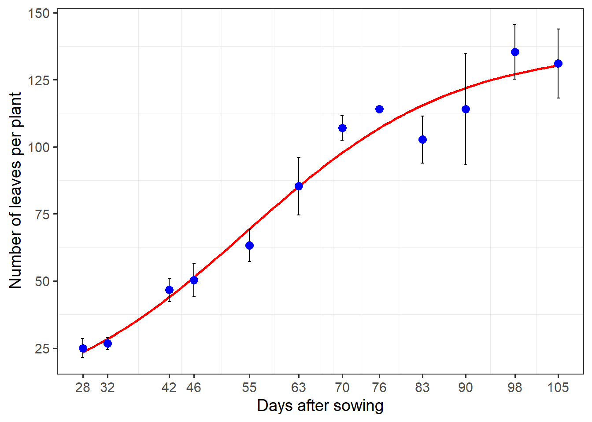
8.3 Filling ‘holes’
An important aspect to consider in leaf area measures is when leaves present ‘holes’. This can occur, for example, by the attack of pests. In this case, the area would have to be considered, because it was there! The image bellow is used as an example.
holes <- image_import("holes.jpg", plot = TRUE)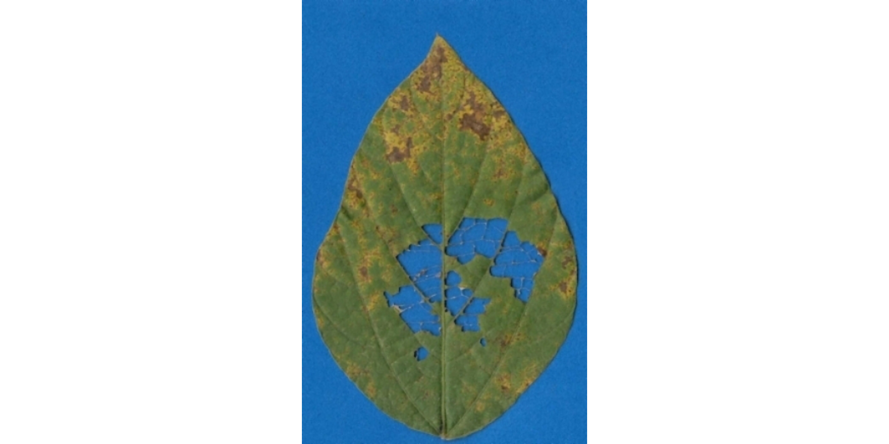
In this case, the missing area will not be computed using the default settings of analyze_objects(). To include this area as the leaf area, we can use the argument fill_hull(). Note that this will only work for missing areas within a closed object. If the missing area includes the original leaf contour, there is no (yet available) way to reconstruct the leaf perimeter.
af <-
analyze_objects(holes,
watershed = FALSE,
col_background = "white",
marker = "area",
marker_col = "red",
marker_size = 3,
show_image = FALSE,
save_image = TRUE,
dir_processed = tempdir(),
contour_size = 5)
# fill the missing area
af2 <-
analyze_objects(holes,
fill_hull = TRUE, # fill ' holes '
watershed = FALSE,
col_background = "white",
marker = "area",
marker_col = "red",
marker_size = 3,
show_image = FALSE,
save_image = TRUE,
prefix = "proc2_",
dir_processed = tempdir(),
contour_size = 5)
imgs <- image_import(pattern = "proc", path = tempdir())
image_combine(imgs)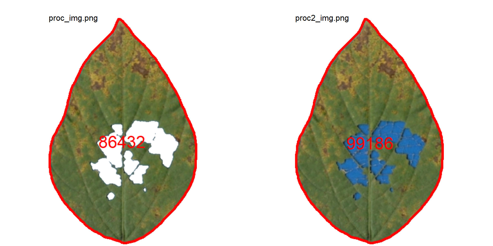
We can simply use the ratio between proc_img and proc_img2 to compute the injured area in this leaflet.
# percent of the injured area
100 - 86432 / 99186 * 100[1] 12.858678.4 Compound leaves
A simple leaf blade is undivided. The blade of a compound leaf is divided into several leaflets. In the following examples, I will show how to analyze simple and compound leaves with analyze_objects(), mainly if the goal is to obtain the measures for each leaf (e.g., mean area), where the number of objects (leaves) will influence the results.
The following images by Daniel Saueressig were obtained from the Sistema de Identificação Dendrológica Online - Floresta Ombrófila Mista11 and show examples of simple and compound leaves.
imgs <-
image_import(c("simple.jpg", "compound.jpg")) |>
image_horizontal()
image_combine(imgs)
Analyzing non-touching simple leaves is fairly simple. We already did that. The squares in the background have 4 cm\(^2\). With this information, it is possible to obtain the image resolution with dpi(simple), which will be useful to adjust the measures. In this case, the estimated dpi is 48.65.
simple <- imgs$simple.jpg
sarea <- analyze_objects(simple, marker = "id")
Note that with the default settings, the simple leaf was partitioned into small, segmented leaves. This can be solved by either using object_size = "large" or watershed = FALSE, to omit the watershed segmentation algorithm. The last is used here.
sarea <-
analyze_objects(simple,
watershed = FALSE,
marker = "id",
show_chull = TRUE,
contour_size = 6)
sarea_cor <- get_measures(sarea, dpi = 48.65)
sarea_cor |> t() 2 3
id 2.000 3.000
x 183.241 178.843
y 68.637 184.643
area 20.035 41.417
area_ch 31.852 56.267
perimeter 31.560 41.287
radius_mean 3.030 4.285
radius_min 1.095 1.070
radius_max 5.717 7.953
radius_sd 1.215 1.801
diam_mean 6.060 8.570
diam_min 2.190 2.139
diam_max 11.433 15.906
major_axis 9.237 13.661
minor_axis 3.194 4.225
length 11.068 15.474
width 4.698 6.041
radius_ratio 5.220 7.435
eccentricity 0.147 0.133
theta -0.018 -0.082
solidity 0.629 0.736
convexity 0.779 0.675
elongation 0.576 0.610
circularity 49.715 41.157
circularity_haralick 2.493 2.379
circularity_norm 4.106 3.353
coverage 0.088 0.182
asm 0.048 0.043
con 3.761 1.671
cor 0.811 0.845
var 10.970 6.401
idm 0.647 0.663
sav 22.952 23.134
sva 507.260 499.010
sen 1.246 1.246
ent 1.663 1.618
dva 3.761 1.671
den 0.603 0.516
f12 0.287 0.319
f13 0.654 0.677For compound leaves, if the watershed segmentation is used, leaflets will probably be considered as different leaves, as can be seen below.
compound <- imgs$compound.jpg
carea <-
analyze_objects(compound,
show_segmentation = TRUE,
show_contour = FALSE,
marker = "id")
Therefore, using watershed = FALSE will solve this problem, since all leaflets connected by at least one pixel will be considered part of the same leaf.
carea <-
analyze_objects(compound,
watershed = FALSE,
show_segmentation = TRUE,
show_contour = FALSE,
show_chull = TRUE,
marker = "id")
carea_cor <- get_measures(carea, dpi = 49.5)
carea_cor |> t() 3 4
id 3.000 4.000
x 90.218 243.787
y 113.124 114.593
area 18.895 15.890
area_ch 43.161 33.168
perimeter 54.501 48.779
radius_mean 2.548 2.254
radius_min 0.056 0.018
radius_max 5.940 4.964
radius_sd 1.260 1.148
diam_mean 5.097 4.509
diam_min 0.112 0.035
diam_max 11.879 9.929
major_axis 8.404 6.954
minor_axis 6.577 5.552
length 9.339 8.135
width 7.142 6.435
radius_ratio 105.791 280.481
eccentricity 0.656 0.506
theta -0.862 1.308
solidity 0.438 0.479
convexity 0.383 0.412
elongation 0.235 0.209
circularity 157.203 149.739
circularity_haralick 2.023 1.964
circularity_norm 13.363 12.783
coverage 0.086 0.072
asm 0.054 0.047
con 1.100 2.223
cor 0.838 0.753
var 4.386 5.507
idm 0.711 0.666
sav 18.751 27.342
sva 322.551 700.322
sen 1.141 1.179
ent 1.448 1.559
dva 1.100 2.223
den 0.456 0.543
f12 0.328 0.279
f13 0.658 0.6309 Shapefiles
Orthomosaic kindly provided by Prof. Dr. Ivan Ricardo Carvalho (UNIJUÍ)
shp <- image_import("mosaic.tif", plot = TRUE)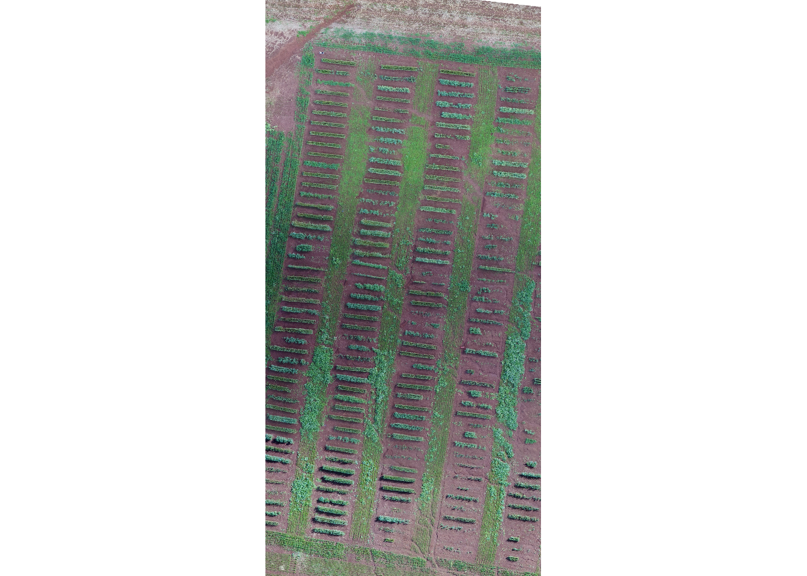
# aligned <- image_align(shp)
aligned <- image_rotate(shp, angle = 82.591)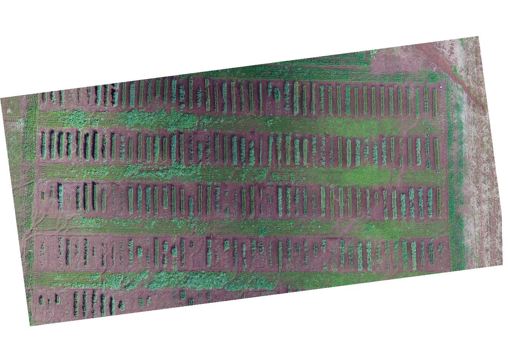
# cropped <- image_crop(aligned, plot = TRUE)
cropped <- image_crop(aligned,
width = 1900:3953,
height = 1350:1625,
plot = TRUE)
anal <-
analyze_objects_shp(cropped,
cols = 26,
index = "HUE",
object_index = "DGCI",
plot = FALSE,
watershed = FALSE)
plot(cropped)
plot(anal$shapefiles)
plot_measures(anal, measure = "DGCI")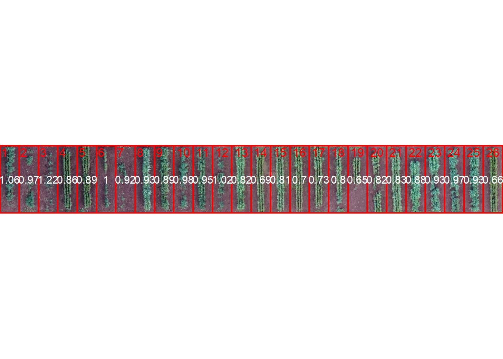
10 Fourier analyses
10.1 Functions
The functions were adapted from Claude (2088)12
Show functions
# Core function for elliptical Fourier analyses
# Elliptical Fourier transform (and its normalization)
# adapted from https://momx.github.io/Momocs/reference/fourier.html
fourier <- function(x, nhm = 10, ...) {
coo <- poly_check(x) |> poly_unclose()
nr <- nrow(coo)
if (nhm * 2 > nr) {
nhm <- floor(nr/2)
if (.is_verbose()) {
message("'nhm' must be lower than half the number of points, and has been set to ", nhm, "harmonics")
}
}
if (nhm == -1) {
nhm = floor(nr/2)
if (.is_verbose()) {
message("the number of harmonics used has been set to: ", nhm)
}
}
Dx <- coo[, 1] - coo[, 1][c(nr, (1:(nr - 1)))]
Dy <- coo[, 2] - coo[, 2][c(nr, (1:(nr - 1)))]
Dt <- sqrt(Dx^2 + Dy^2)
Dt[Dt < 1e-10] <- 1e-10 # to avoid Nan
t1 <- cumsum(Dt)
t1m1 <- c(0, t1[-nr])
T <- sum(Dt)
an <- bn <- cn <- dn <- numeric(nhm)
for (i in 1:nhm) {
Ti <- (T/(2 * pi^2 * i^2))
r <- 2 * i * pi
an[i] <- Ti * sum((Dx/Dt) * (cos(r * t1/T) - cos(r * t1m1/T)))
bn[i] <- Ti * sum((Dx/Dt) * (sin(r * t1/T) - sin(r * t1m1/T)))
cn[i] <- Ti * sum((Dy/Dt) * (cos(r * t1/T) - cos(r * t1m1/T)))
dn[i] <- Ti * sum((Dy/Dt) * (sin(r * t1/T) - sin(r * t1m1/T)))
}
ao <- 2 * sum(coo[, 1] * Dt/T)
co <- 2 * sum(coo[, 2] * Dt/T)
return(list(an = an, bn = bn, cn = cn, dn = dn, ao = ao,
co = co,
nr = nr,
coords = coo))
}
# Normalized coefficients
fourier_norm <- function(ef, start = FALSE) {
A1 <- ef$an[1]
B1 <- ef$bn[1]
C1 <- ef$cn[1]
D1 <- ef$dn[1]
nhm <- length(ef$an)
theta <- 0.5 * atan(2 * (A1 * B1 + C1 * D1)/(A1^2 + C1^2 -
B1^2 - D1^2))%%pi
phaseshift <- matrix(c(cos(theta), sin(theta), -sin(theta),
cos(theta)), 2, 2)
M2 <- matrix(c(A1, C1, B1, D1), 2, 2) %*% phaseshift
v <- apply(M2^2, 2, sum)
if (v[1] < v[2]) {
theta <- theta + pi/2
}
theta <- (theta + pi/2)%%pi - pi/2
Aa <- A1 * cos(theta) + B1 * sin(theta)
Cc <- C1 * cos(theta) + D1 * sin(theta)
scale <- sqrt(Aa^2 + Cc^2)
psi <- atan(Cc/Aa)%%pi
if (Aa < 0) {
psi <- psi + pi
}
size <- 1/scale
rotation <- matrix(c(cos(psi), -sin(psi), sin(psi), cos(psi)),
2, 2)
A <- B <- C <- D <- numeric(nhm)
if (start) {
theta <- 0
}
for (i in 1:nhm) {
mat <- size * rotation %*%
matrix(c(ef$an[i], ef$cn[i],
ef$bn[i], ef$dn[i]), 2, 2) %*%
matrix(c(cos(i * theta), sin(i * theta),
-sin(i * theta), cos(i * theta)), 2, 2)
A[i] <- mat[1, 1]
B[i] <- mat[1, 2]
C[i] <- mat[2, 1]
D[i] <- mat[2, 2]
lnef <- c(A[i], B[i], C[i], D[i])
}
list(A = A, B = B, C = C, D = D, size = scale, theta = theta,
psi = psi, ao = ef$ao, co = ef$co, lnef = lnef)
}
# inverse fourier
fourier_inv <- function(ef, nhm, nb.pts = 120) {
if (is.null(ef$ao))
ef$ao <- 0
if (is.null(ef$co))
ef$co <- 0
an <- ef$an
bn <- ef$bn
cn <- ef$cn
dn <- ef$dn
ao <- ef$ao
co <- ef$co
if (missing(nhm)) {
nhm <- length(an)
}
theta <- seq(0, 2 * pi, length = nb.pts + 1)[-(nb.pts + 1)]
hx <- matrix(NA, nhm, nb.pts)
hy <- matrix(NA, nhm, nb.pts)
for (i in 1:nhm) {
hx[i, ] <- an[i] * cos(i * theta) + bn[i] * sin(i * theta)
hy[i, ] <- cn[i] * cos(i * theta) + dn[i] * sin(i * theta)
}
x <- (ao/2) + apply(hx, 2, sum)
y <- (co/2) + apply(hy, 2, sum)
coo <- cbind(x, y)
colnames(coo) <- c("x", "y")
return(coo)
}10.2 Elliptical fourier
library(pliman)
imgs <- image_import(pattern = "img", path = "fourier")
names(imgs) <- paste0("ind", 1:9)
conts <-
object_contour(imgs,
index = "B",
watershed = FALSE,
show_image = FALSE)
d <- fourier(conts$ind1$`2`, nhm = 100)
plot(imgs$ind1)
# 10 harmônicas
d_i <- fourier_inv(d, 10, nb.pts = 1000)
plot_contour(d_i, lwd = 2)
# 20 harmônicas
d_i <- fourier_inv(d, 20, nb.pts = 1000)
plot_contour(d_i, lwd = 2, col = "blue")
# 40 harmônicas
d_i <- fourier_inv(d, 80, nb.pts = 1000)
plot_contour(d_i, lwd = 2, col = "red")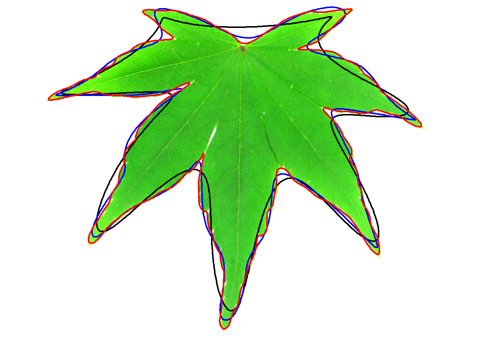
10.3 Rotation and size
library(pliman)
img <- image_import("changes.png", path = "fourier")
cont <-
object_contour(img,
index = "B",
watershed = FALSE,
show_image = FALSE)
f1 <- fourier(cont$`1`, nhm = 5)
f2 <- fourier(cont$`2`, nhm = 5)
f3 <- fourier(cont$`3`, nhm = 5)
f1$an[1] 12.0989673 0.3642945 2.3491815 -1.3170290 -1.0623448f2$an[1] 167.329018 45.411721 -47.133350 12.902906 -8.440965f3$an[1] 6.5592562 0.3521776 1.2573074 -0.6858838 -0.5661625f1n <- fourier_norm(f1)
f2n <- fourier_norm(f2)
f3n <- fourier_norm(f3)
f1n$A[1] 1.000000000 -0.020752286 -0.001967149 -0.022437848 -0.010519230f2n$A[1] -1.000000000 0.053474289 0.005280597 0.038000242 0.011862582f3n$A[1] 1.000000000 -0.013163949 -0.002955584 -0.017501282 -0.01291722210.4 Morphological diversity
conts <-
object_contour(imgs,
index = "B",
watershed = FALSE,
show_image = FALSE)
eff <- lapply(conts, function(x){
fourier(x[[1]], nhm = 15) |> fourier_norm()
})
an <- do.call(rbind, lapply(eff, function(x){x[["A"]]}))
bn <- do.call(rbind, lapply(eff, function(x){x[["B"]]}))
cn <- do.call(rbind, lapply(eff, function(x){x[["C"]]}))
dn <- do.call(rbind, lapply(eff, function(x){x[["D"]]}))
coefs <-
cbind(an, bn, cn, dn) |>
transform(specie = c(rep(paste0("specie", 1:3), each = 3)))
library(factoextra)Welcome! Want to learn more? See two factoextra-related books at https://goo.gl/ve3WBa
Attaching package: 'factoextra'The following object is masked from 'package:metan':
get_distWarning: package 'FactoMineR' was built under R version 4.2.1pca <- PCA(coefs, quali.sup = 61, graph = FALSE)
fviz_pca_ind(pca, habillage = 61, repel = TRUE)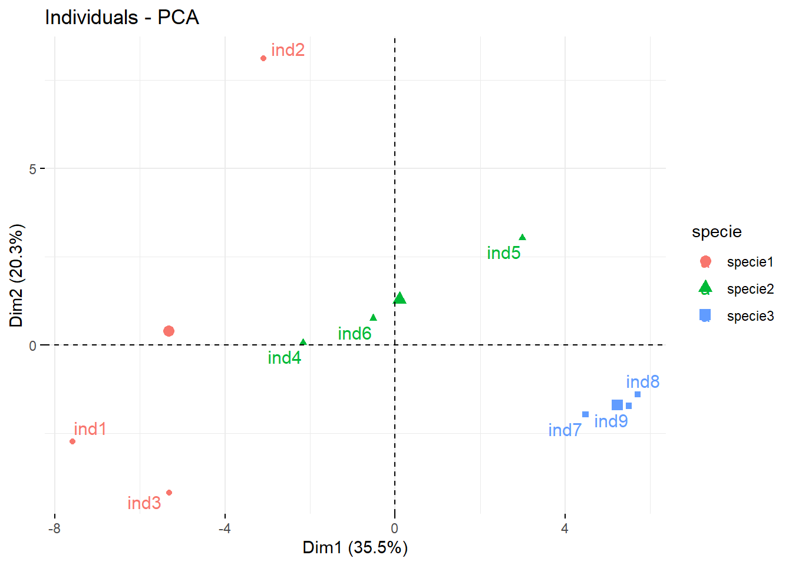
image_combine(imgs)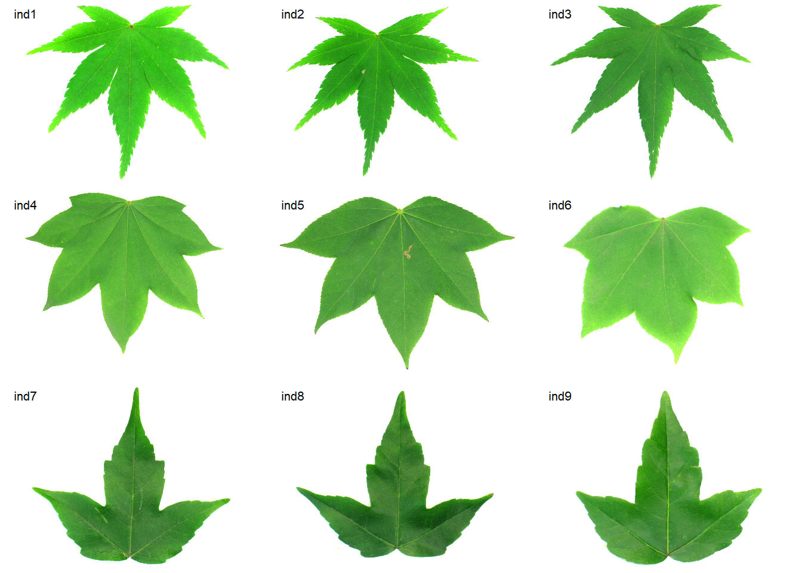
11 Distance to an ideotype
11.1 Cluster objects
img <- image_import("distance.png", path = "fourier")
cont <-
object_contour(img,
index = "B",
watershed = FALSE,
show_image = FALSE)
plot_polygon(cont, aspect_ratio = 1)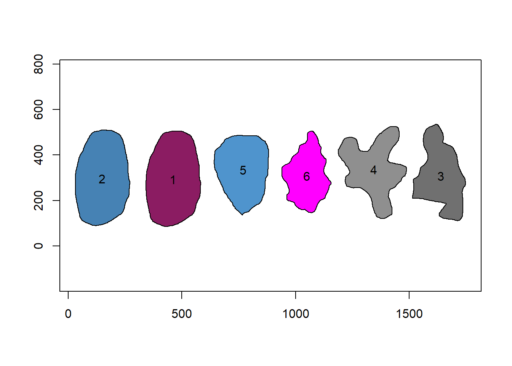
dfour <- lapply(cont, function(x){
fourier(x, nhm = 15) |> fourier_norm()
})
an <- do.call(rbind, lapply(dfour, function(x){x[["A"]]}))
bn <- do.call(rbind, lapply(dfour, function(x){x[["B"]]}))
cn <- do.call(rbind, lapply(dfour, function(x){x[["C"]]}))
dn <- do.call(rbind, lapply(dfour, function(x){x[["D"]]}))
coefs <- cbind(an, bn, cn, dn)
library(factoextra)
library(FactoMineR)
library(NbClust)
pca <- PCA(coefs, graph = FALSE)
fviz_pca_ind(pca, repel = TRUE)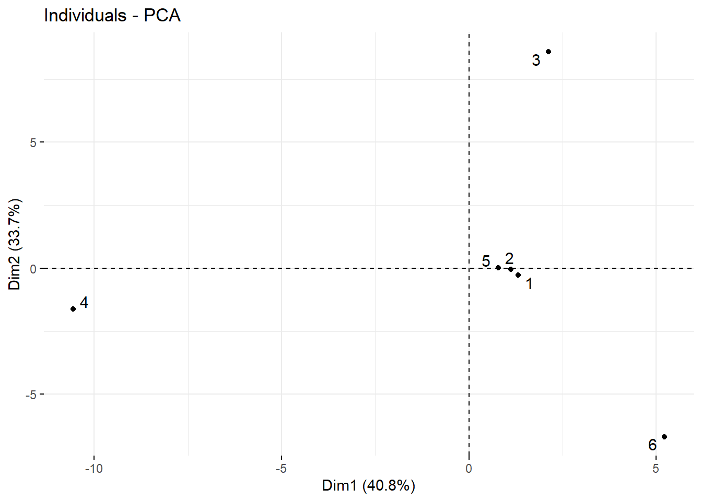
Warning: `guides(<scale> = FALSE)` is deprecated. Please use `guides(<scale> =
"none")` instead.
11.2 Distance to an ideotype
desc_ide <- coefs[1,]
desc_objs <- coefs[-1,]
# compute the differences between each object and the ideotype
gen_ide <- sweep(desc_objs, 2, desc_ide, "-")
distances <-
apply(gen_ide, 1, function(x){sqrt(sum(x^2))}) %>%
sort(decreasing = FALSE)
distances 2 6 3 5 4
0.002405437 0.130426948 2.332612482 2.429309481 2.458666804 Footnotes
Singer, M.H. 1993. A general approach to moment calculation for polygons and line segments. Pattern Recognition 26(7): 1019–1028. doi: 10.1016/0031-3203(93)90003-F.↩︎
Chen, C.H., and P.S.P. Wang. 2005. Handbook of Pattern Recognition and Computer Vision. 3rd ed. World Scientific.↩︎
Claude, J. 2008. Morphometrics with R. Springer.↩︎
Montero, R.S., E. Bribiesca, R. Santiago, and E. Bribiesca. 2009. State of the Art of Compactness and Circularity Measures. International Mathematical Forum 4(27): 1305–1335.↩︎
Lee, Y., and W. Lim. 2017. Shoelace Formula: Connecting the Area of a Polygon and the Vector Cross Product. The Mathematics Teacher 110(8): 631–636. doi: 10.5951/MATHTEACHER.110.8.0631.↩︎
Montero, R.S., E. Bribiesca, R. Santiago, and E. Bribiesca. 2009. State of the Art of Compactness and Circularity Measures. International Mathematical Forum 4(27): 1305–1335↩︎
Haralick, R.M. 1974. A Measure for Circularity of Digital Figures. IEEE Transactions on Systems, Man, and Cybernetics SMC-4(4): 394–396. doi: 10.1109/TSMC.1974.5408463.↩︎
Haralick, R.M., K. Shanmugam, and I. Dinstein. 1973. Textural Features for Image Classification. IEEE Transactions on Systems, Man, and Cybernetics SMC-3(6): 610–621. doi: 10.1109/TSMC.1973.4309314↩︎
Karcher, D.E., and M.D. Richardson. 2003. Quantifying Turfgrass Color Using Digital Image Analysis. Crop Science 43(3): 943–951. doi: 10.2135/cropsci2003.9430↩︎
The images come from an experiment evaluating flax cultivars at the Universidade Federal de Santa Catarina - UFSC↩︎
https://www.florestaombrofilamista.com.br/sidol/?menu=glossary↩︎
Claude, J. 2008. Morphometrics with R. Springer.↩︎